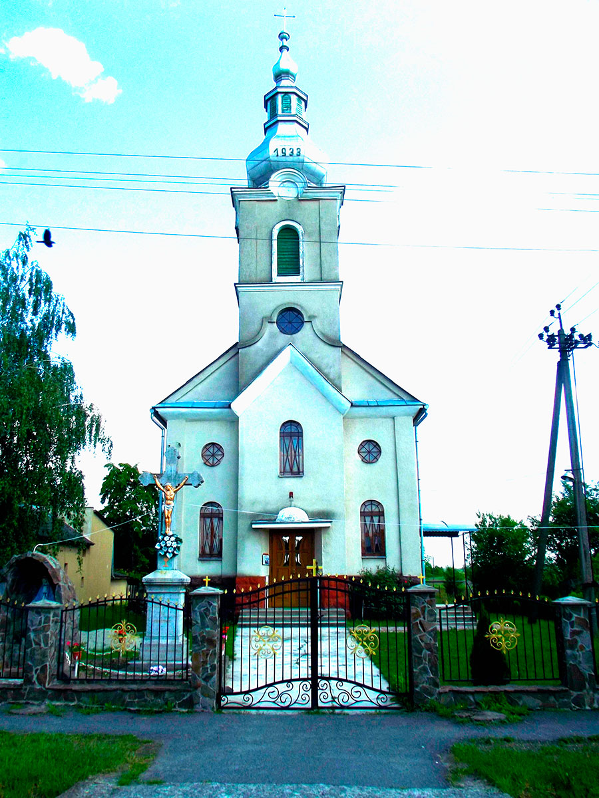

Розташування
Село Тийглаш знаходиться на північ від річки Латориця або на 16 км. від міста Ужгород.Назва села проходить від назви цегли, так як в селі випалювали цеглу у давнину. Через село проходить Автодорога КиївЧоп. Зі слів розповідів мешканців села у великій мірі були хати із цегли.
Історія
Першими жителями села були сім'ї бурлаки на річці Латориця. У 1786 році вже є перші рукописні згадки в якому село згадувалось як Кіштеглаш. У 1866 році є згадки про перші корчми. Село до 1869 року мало свою сільську громаду сільську раду. В 1890 роців селі порахувалось приблизно 100 хат. Спочатку село називали Кіштеглаш а потім Цеглівка. Від 1869 до 2004 років с. Тийглаш відносилося до Сюртівської адміністративнотериторіальної громади. З 01.01.2004 року село відокремилося в самостійну громаду. Перший Сільський голова був Сюч Олександр Адальбертович. На сьогоднішній час керує селом сільський голова Сіка Юрій За останні 250років село Тийглаш пройшло через значні зміни. Памятні міста.
У 1933 році збудована римокатолицька Церква яка залишилась у своїй оригінальності.